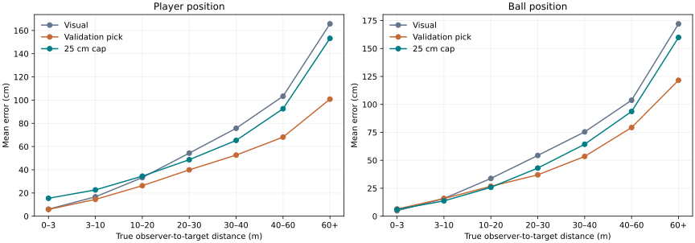

Exp6 · first Gaussian temporal denoising study
The corrected visual position is the baseline. We compared two-frame averages with Kalman filters that combine previous motion and the current measured position. Player and ball candidates are selected separately. The evaluation covers 40 held-out games after choosing settings on 20 other games. Each game contributes four observers with rotating uniform numbers, balanced between the two sides.
| Target | Selection | Validation choice | Visual cm | Test cm | 95% change interval, cm | Worsened >25 cm |
|---|---|---|---|---|---|---|
| Player | Lowest mean | Kalman, position only | 55.90 | 40.17 | [-16.34, -15.12] | 6.06% |
| Player | 25 cm cap | Kalman + velocity, quick + 25 cm cap | 55.90 | 51.44 | [-4.83, -4.12] | 0.00% |
| Ball | Lowest mean | Kalman + velocity, medium | 52.26 | 38.89 | [-13.70, -13.04] | 10.40% |
| Ball | 25 cm cap | Kalman + velocity, medium + 25 cm cap | 52.26 | 43.67 | [-8.74, -8.43] | 0.00% |
A negative change in the interval means lower position error than the visual baseline. The intervals resample whole matches. A 25 cm cap limits how far the output can move from the visual position in each cycle. By the triangle inequality, it also limits added position error to 25 cm.

Close targets below 3 m
| Target below 3 m | Visual cm | Best mean filter cm | 25 cm cap cm | Best mean worsened >25 cm |
|---|---|---|---|---|
| Player | 6.05 | 5.83 | 15.45 | 0.00% |
| Ball | 4.89 | 6.42 | 6.09 | 1.75% |
Distance slices use reference truth for analysis. These slices show how the overall improvements vary near the observer. The filters use measured range and pose during inference.
All candidates under 50 m on the held-out games
Players
| Method | Mean cm | Gain cm | Worsened >25 cm | Worsened >50 cm | Max added cm |
|---|---|---|---|---|---|
| Current visual position | 55.90 | 0.00 | 0.00% | 0.00% | 0.00 |
| Kalman, position only | 40.17 | 15.73 | 6.06% | 1.39% | 991.37 |
| Average two positions | 47.73 | 8.17 | 16.70% | 3.98% | 786.65 |
| Average with one-cycle velocity prediction | 51.36 | 4.54 | 5.23% | 0.84% | 784.53 |
| Kalman + velocity, quick + 25 cm cap | 51.44 | 4.46 | 0.00% | 0.00% | 25.00 |
| Kalman + velocity, medium + 25 cm cap | 51.78 | 4.12 | 0.00% | 0.00% | 25.00 |
| Kalman + velocity, smooth + 25 cm cap | 52.34 | 3.56 | 0.00% | 0.00% | 25.00 |
| Kalman + velocity, quick + 50 cm cap | 53.07 | 2.83 | 24.14% | 0.00% | 50.00 |
| Kalman + velocity, medium + 50 cm cap | 54.01 | 1.89 | 27.16% | 0.00% | 50.00 |
| Kalman + velocity, smooth + 50 cm cap | 55.34 | 0.57 | 29.77% | 0.00% | 50.00 |
| Kalman + velocity, quick | 70.12 | -14.22 | 35.50% | 22.64% | 1,418.32 |
| Kalman + velocity, medium | 77.46 | -21.56 | 41.88% | 28.59% | 1,420.69 |
| Kalman + velocity, smooth | 87.91 | -32.00 | 47.99% | 34.74% | 1,428.47 |
Ball
| Method | Mean cm | Gain cm | Worsened >25 cm | Worsened >50 cm | Max added cm |
|---|---|---|---|---|---|
| Current visual position | 52.26 | 0.00 | 0.00% | 0.00% | 0.00 |
| Kalman + velocity, medium | 38.89 | 13.37 | 10.40% | 3.83% | 1,620.17 |
| Kalman + velocity, medium + 50 cm cap | 40.31 | 11.95 | 8.24% | 0.00% | 50.00 |
| Kalman + velocity, smooth + 50 cm cap | 40.58 | 11.68 | 10.21% | 0.00% | 50.00 |
| Kalman + velocity, quick | 41.15 | 11.11 | 8.74% | 2.60% | 1,618.41 |
| Kalman + velocity, smooth | 41.34 | 10.92 | 14.22% | 6.95% | 1,629.94 |
| Kalman + velocity, quick + 50 cm cap | 41.80 | 10.46 | 7.30% | 0.00% | 50.00 |
| Kalman, position only | 43.67 | 8.59 | 7.03% | 1.94% | 966.16 |
| Kalman + velocity, medium + 25 cm cap | 43.67 | 8.59 | 0.00% | 0.00% | 25.00 |
| Kalman + velocity, smooth + 25 cm cap | 43.74 | 8.52 | 0.00% | 0.00% | 25.00 |
| Kalman + velocity, quick + 25 cm cap | 44.47 | 7.79 | 0.00% | 0.00% | 25.00 |
| Average with one-cycle velocity prediction | 50.02 | 2.23 | 8.65% | 4.15% | 905.92 |
| Average two positions | 68.87 | -16.61 | 41.98% | 22.82% | 905.43 |
“Worsened” measures the increase in Euclidean error compared with the current visual position for the same sample.
How the filters work
- Two-frame averages. Average the previous and current observed positions. The velocity version advances the previous position by the previous direct visual velocity first, and uses the current fix when that velocity is missing.
- Kalman filters. Predict the current position with a constant-velocity state. Trust the current measurement less along the viewing ray when estimated Gaussian range noise is large. Including direct visual velocity offers another update when both motion fields are present. Filters differ in how quickly they allow motion to change. The ball uses larger process and velocity uncertainty.
- Caps. Limit the output correction to 25 or 50 cm. Prediction history is updated from the underlying filter state. The cap applies to evaluation output each cycle.
Inputs use current and past observations only. Track history restarts when a consecutive PlayOn observation is missing. Truth is read for scoring after calculating the outputs, and supplies the distance slices. Validation chooses the lowest mean error under 50 m, once among all candidates and once among the 25 cm capped candidates. Test trajectories are the recorded games played with corrected Gaussian localization.
The reported variance settings are working estimates for filtering. They approximate correlated position and velocity measurements. This study measures current position error on recorded trajectories. Live decisions and gameplay need a separate evaluation.
Confirmation on 40 additional games
The first test found that filtering could worsen close positions, especially for the ball. The follow-up uses the current visual position when the measured range is below 5 m and caps position corrections at 25 cm elsewhere. Validation chose the position-only filter for players and the medium position-and-velocity filter for the ball. The same validation games were used for selection. The 40 confirmation games differ from the first 40 test games.
| Target under 50 m | Visual cm | Filtered cm | 95% change interval, cm | Worsened >25 cm |
|---|---|---|---|---|
| Player | 55.58 | 47.20 | [-8.56, -8.20] | 0.00% |
| Ball | 51.98 | 43.31 | [-8.80, -8.53] | 0.00% |
| Target under 3 m | Rows | Visual cm | Filtered cm | Max added cm |
|---|---|---|---|---|
| Player | 102,455 | 6.04 | 6.04 | 0.00 |
| Ball | 31,689 | 4.93 | 4.93 | 0.00 |
Distance slices use true distance for evaluation. The gate uses measured Gaussian range. The 25 cm cap bounds added position error relative to the visual estimate for each sample.
Confirmation split and metrics
Live corrected Gaussian audit · Split and numerical results
exp=rcssserver-denoise/experiments/exp6
.venv-exp5-s1/bin/python "$exp/reporting/analyze_temporal.py" logs/exp6-logs3 logs/exp6-analysis/temporal-exp6logs3